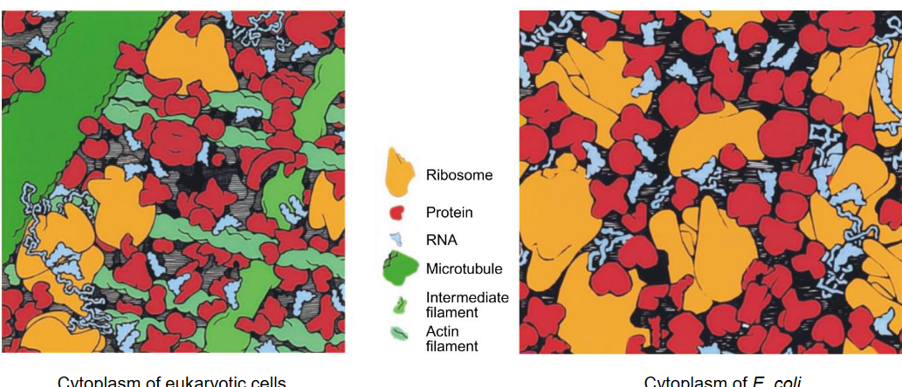
4 Chaperones and Protein Homeostasis
Christian Anfinsen, winner of the 1972 Nobel Prize in Chemistry, once pondered the questions of who is right and what is true. These questions are fundamental to understanding the world around us. In his research, Anfinsen explored how proteins fold, a process essential for their function. His work shed light on the complex mechanisms governing life at a molecular level.
Similarly, scientists F. Ulrich Hartl and Arthur Horwich have made significant contributions to our understanding of biology. Their research delves into the intricate world of protein folding, unraveling the mysteries of how cells function and how diseases like Alzheimer’s and Parkinson’s develop.
Protein folding, the process by which proteins assume their functional three-dimensional shapes, is crucial for their proper functioning within living organisms. Imagine a bustling city with crowded streets; similarly, within our cells, proteins fold in a crowded environment filled with other molecules.
This crowded environment presents challenges for proteins as they fold. They must navigate through a sea of other molecules, jostling and interacting with them along the way. Sometimes, this crowded space can hinder the folding process, leading to misfolded proteins that may not function correctly.
Scientists like F. Ulrich Hartl and Arthur Horwich have dedicated their research to understanding how proteins fold in such crowded conditions. By studying the intricate dance of molecules within cells, they have uncovered mechanisms that assist proteins in folding properly despite the crowded environment.
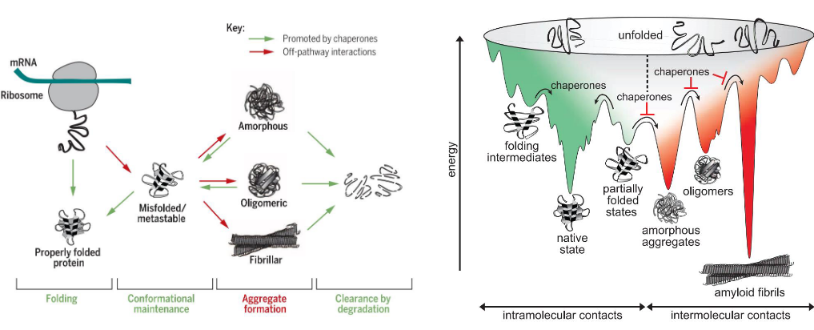
Chaperones play vital roles in the proteostasis network, which is the cellular system responsible for maintaining the proper balance of proteins. Think of chaperones as the guardians of protein health within our cells.
One of the primary functions of chaperones is to assist proteins in folding correctly. Proteins start as long chains of amino acids and need to fold into specific shapes to perform their functions effectively. Chaperones help guide this folding process, ensuring that proteins adopt their proper three-dimensional structures.
Additionally, chaperones prevent protein misfolding and aggregation. Sometimes, proteins can misfold or clump together, which can be harmful to the cell. Chaperones act as quality control agents, identifying misfolded or aggregated proteins and either refolding them into their correct shapes or targeting them for degradation.
Chaperones also play a role in protein transport within the cell. They help ferry proteins to their designated locations, ensuring they reach the right organelles or compartments where they are needed.
Furthermore, chaperones assist in protein degradation. When proteins are damaged or no longer needed, they must be broken down and recycled. Chaperones help facilitate this process by guiding proteins to degradation machinery where they can be dismantled into their component parts for reuse.
4.1 Protein Folding Pathways in Bacteria
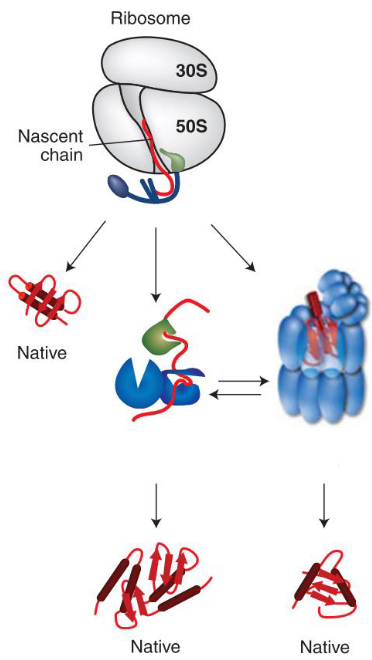
One of the primary pathways involved in protein folding in bacteria is the chaperone-mediated folding pathway. Chaperones are specialized proteins that assist other proteins in folding correctly. Within this pathway, chaperones interact with newly synthesized proteins as they emerge from ribosomes, guiding them through the folding process to ensure they attain their functional shapes.
Another important pathway in bacterial protein folding is the co-translational folding pathway. In this pathway, proteins begin to fold even as they are being synthesized by ribosomes. As the protein chain emerges from the ribosome, it starts to fold into its native structure with the help of chaperones and other folding factors. This simultaneous folding and synthesis process ensure that the protein is properly folded as soon as it is synthesized.
Furthermore, bacteria utilize protein degradation pathways to maintain protein homeostasis. If a protein fails to fold correctly despite chaperone assistance or becomes damaged or obsolete, it may be targeted for degradation. Bacterial cells have proteases, enzymes specialized in breaking down proteins, which dismantle misfolded or unwanted proteins into smaller peptides or amino acids for recycling.
4.1.0.1 Hsp70-Hsp40 System
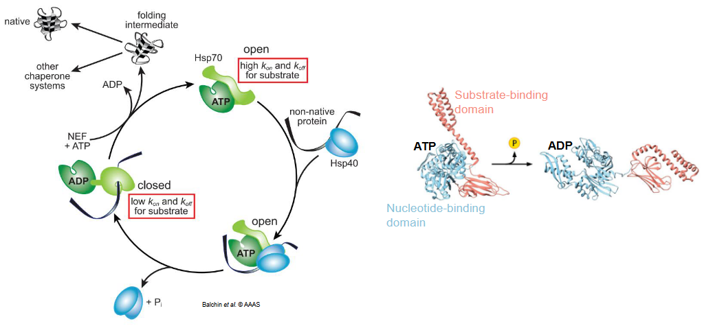
The Hsp70-Hsp40 system is a critical molecular machinery found in cells, including bacteria, that helps in protein folding and quality control. These components are often referred to as chaperones because they assist other proteins in folding correctly and prevent misfolding.
At the heart of this system is the Hsp70 protein, which acts as a molecular chaperone. Hsp70 binds to exposed hydrophobic regions on proteins, which are common during the folding process. By doing so, Hsp70 prevents these regions from sticking together inappropriately, thus helping the protein fold properly into its functional shape. However, Hsp70 alone can be slow in its action.
This is where the Hsp40 co-chaperone comes into play. Hsp40 interacts with Hsp70 and helps accelerate its activity. It does this by stimulating the ATPase activity of Hsp70, which is crucial for its chaperone function. By enhancing the ATPase activity, Hsp40 increases the efficiency of Hsp70 in binding to and releasing its client proteins, thereby facilitating the protein folding process.
Together, the Hsp70-Hsp40 system forms a dynamic duo in the cell, working hand in hand to ensure that proteins fold correctly and maintain their proper structures. This system is essential for cellular health and is involved in various cellular processes, including protein synthesis, protein trafficking, and response to stress.
4.1.1 Chaperonin
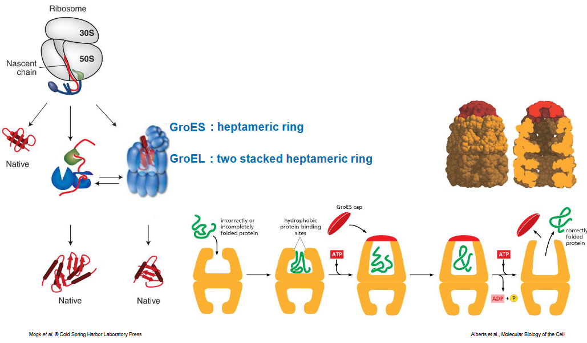
Chaperonins are like tiny cages within the cell that provide a protected environment for protein folding. These remarkable structures play a crucial role in ensuring that proteins fold correctly, without interference from other molecules in the crowded cellular environment.
The key feature of chaperonins is their hollow, barrel-like structure, which forms a chamber where proteins can fold undisturbed. One of the most well-known types of chaperonins is called GroEL-GroES, found in bacteria.
When a protein needs to fold, it enters the central cavity of the chaperonin. Once inside, the chaperonin closes like a lid, encapsulating the protein within its chamber. This isolation shields the folding protein from potential disruptions by other cellular components, allowing it to fold properly.
Inside the chaperonin chamber, the folding protein is provided with the ideal conditions for folding. The enclosed space allows the protein to explore different conformations without interference, helping it find its correct three-dimensional structure.
To further assist in the folding process, chaperonins often work in conjunction with co-chaperones, such as GroES in the case of GroEL. GroES acts as a lid, sealing the top of the chaperonin chamber and creating an even more secluded environment for protein folding.
Once the folding process is complete, the chaperonin releases the folded protein, which can then go on to perform its specific function within the cell.
4.2 Chaperone Families in Eukaryotes and Their Functions
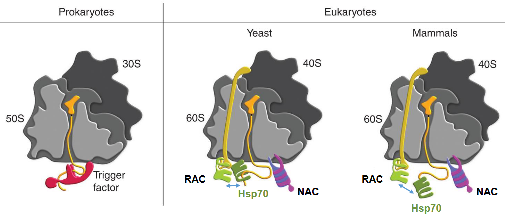
In eukaryotic cells, there are specialized chaperones that assist in protein folding as soon as the proteins are synthesized by ribosomes. Two prominent examples of these ribosome-binding chaperones are RAC (Ribosome-associated complex) and NAC (Nascent polypeptide-associated complex).
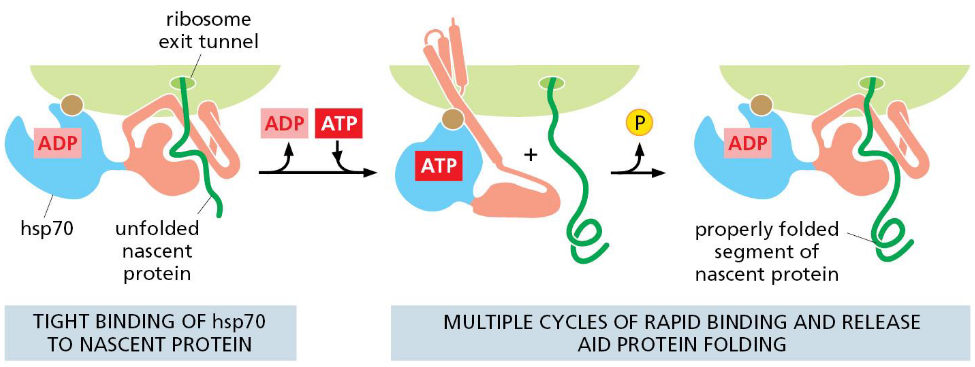
RAC serves as a cofactor of Hsp70, another important chaperone protein, facilitating its activity in protein folding. As proteins are being synthesized by ribosomes, RAC interacts with the ribosome and recruits Hsp70 to the nascent polypeptide chain as it emerges from the ribosome. This interaction helps to prevent premature folding or aggregation of the nascent protein, ensuring that it attains its proper three-dimensional structure.
NAC, on the other hand, directly binds to the nascent polypeptide chain as it emerges from the ribosome. This association helps to shield the newly synthesized protein from interactions with other cellular components and provides a conducive environment for proper folding. NAC also assists in targeting the nascent protein to its correct cellular location, ensuring that it reaches its designated organelle or compartment.
4.2.1 Functions of Hsp70
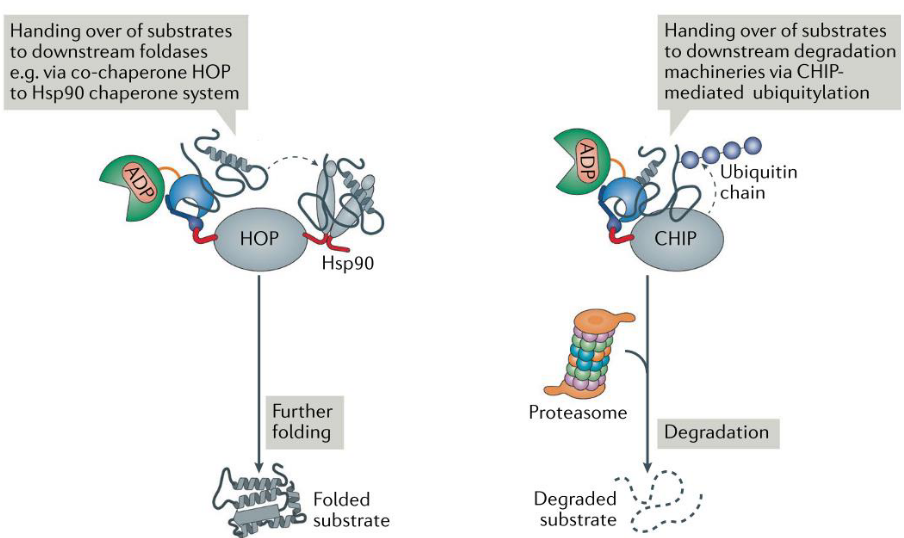
Firstly, Hsp70 assists in protein folding. It interacts with newly synthesized or misfolded proteins, preventing them from aggregating and guiding them along the correct folding pathways. By doing so, Hsp70 ensures that proteins adopt their proper three-dimensional structures, which is essential for their biological activity.
Secondly, Hsp70 plays a role in protein transport within the cell. It helps to ferry proteins across membranes or guide them to specific cellular compartments where they are needed for various functions. This transport function ensures that proteins reach their correct destinations within the cell, allowing them to perform their designated roles.
Additionally, Hsp70 is involved in protein degradation. It interacts with misfolded or damaged proteins, targeting them for degradation by cellular machinery such as proteasomes. This process helps to remove aberrant proteins from the cell, preventing them from interfering with normal cellular processes and maintaining protein quality control.
Moreover, Hsp70 plays a crucial role in cellular stress responses. When cells are exposed to stressful conditions such as heat, oxidative stress, or nutrient deprivation, the expression of Hsp70 is often upregulated. Hsp70 helps cells cope with these stresses by stabilizing proteins, preventing their denaturation, and promoting cell survival under adverse conditions.
4.2.2 TRiC
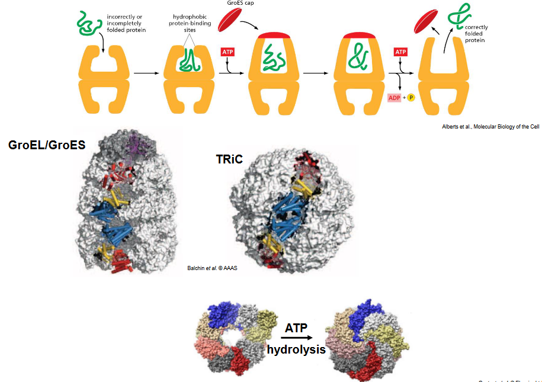
TRiC, also known as TCP-1 Ring Complex, is a type II chaperonin found in the cytosol of eukaryotic cells. It is composed of two stacked rings, each containing eight different subunits. TRiC plays a crucial role in facilitating the folding of diverse cytosolic proteins, ensuring their proper structure and function.
One of the key functions of TRiC is to assist in the folding of newly synthesized proteins as they emerge from ribosomes. As proteins are synthesized, they often require assistance to attain their correct three-dimensional shapes. TRiC provides a protected environment within its chamber-like structure, allowing proteins to fold properly without interference from other cellular components. This function is particularly important for proteins with complex folding patterns or those prone to misfolding.
Additionally, TRiC is involved in the folding of proteins that are crucial for cellular processes such as cell cycle regulation, cytoskeletal dynamics, and signal transduction. By facilitating the folding of these essential proteins, TRiC contributes to the proper functioning of the cell.
Moreover, TRiC is implicated in the maintenance of protein homeostasis and cellular integrity under stress conditions. When cells are exposed to environmental stressors such as heat or toxins, TRiC helps to prevent protein misfolding and aggregation, thereby promoting cell survival.
4.2.3 Protein Folding in Eukaryotes
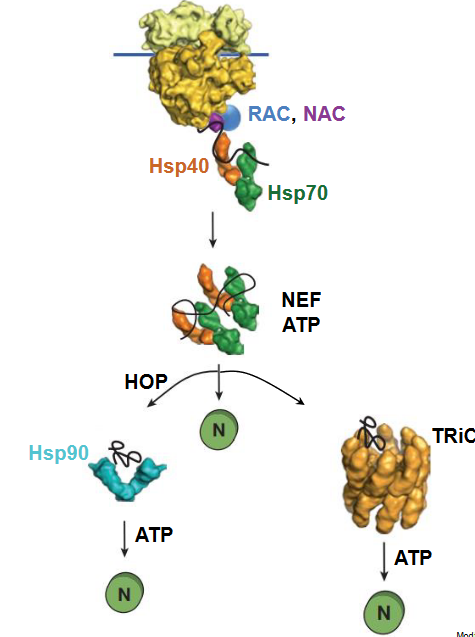
In eukaryotic cells, cytosolic protein folding involves a series of coordinated pathways and molecular chaperones that ensure newly synthesized proteins attain their correct three-dimensional structures. Here’s an overview of the key players and steps involved in cytosolic protein folding:
RAC (Ribosome-associated complex) and NAC (Nascent polypeptide-associated complex): These complexes interact with ribosomes and nascent polypeptide chains emerging from ribosomes, respectively. RAC recruits Hsp70 to the nascent chain, while NAC directly binds to the nascent polypeptide, protecting it and facilitating its proper folding.
Hsp70: Heat Shock Protein 70 is a major molecular chaperone involved in protein folding. It interacts with exposed hydrophobic regions on proteins, preventing misfolding and aggregation. Hsp70’s activity is regulated by ATP and co-chaperones such as Hsp40 (also known as DnaJ).
Hsp40 (DnaJ): Hsp40 acts as a co-chaperone to Hsp70, stimulating its ATPase activity and enhancing its chaperone function. It helps to deliver substrate proteins to Hsp70 and stabilize their binding.
NEF (Nucleotide Exchange Factor): NEF assists in the dissociation of ADP from Hsp70, allowing for the binding of fresh ATP. This ATP hydrolysis and exchange cycle is essential for the chaperone activity of Hsp70.
HOP (Hsp70-Hsp90 Organizing Protein): HOP acts as a co-chaperone that bridges the interaction between Hsp70 and Hsp90. This interaction is crucial for the transfer of client proteins from Hsp70 to Hsp90 during their folding process.
Hsp90: Heat Shock Protein 90 is another important molecular chaperone involved in protein folding. It acts downstream of Hsp70 and plays a role in the maturation and stabilization of client proteins. Hsp90’s activity is also ATP-dependent.
TRiC (TCP-1 Ring Complex): TRiC is a large multi-subunit chaperonin complex that provides a protected environment for the folding of diverse cytosolic proteins. It assists in the folding of a wide range of substrates, particularly those with complex folding patterns.
4.2.4 Polyribosomes
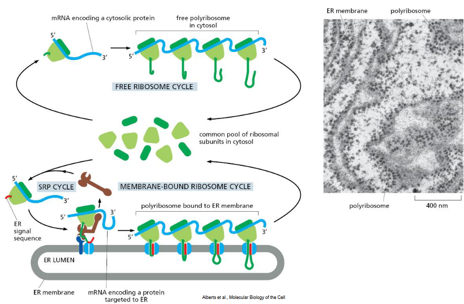
Polyribosomes, also known as polysomes, are clusters of ribosomes found within eukaryotic cells that are actively translating mRNA molecules into proteins. These structures play a crucial role in protein synthesis, allowing multiple ribosomes to simultaneously translate a single mRNA strand. Within eukaryotic cells, polyribosomes can exist in two primary forms: free polyribosomes and membrane-bound polyribosomes.
Free polyribosomes are dispersed throughout the cytoplasm, existing independently of any membrane-bound structures such as the endoplasmic reticulum (ER). They are responsible for synthesizing proteins that are intended to remain within the cytosol or to be transported to various organelles such as the nucleus or mitochondria. Proteins synthesized by free polyribosomes often fulfill essential cellular functions related to metabolism, cytoskeletal organization, and signaling pathways.
On the other hand, membrane-bound polyribosomes are attached to the endoplasmic reticulum (ER) membrane. These polyribosomes are typically found in close association with the rough ER, contributing to its characteristic rough appearance observed under electron microscopy. Proteins synthesized by membrane-bound polyribosomes are translocated into the lumen of the ER as they are being synthesized. These proteins undergo further processing, such as folding and glycosylation, within the ER before being transported to their final destinations. Membrane-bound polyribosomes primarily synthesize proteins that are destined for secretion, incorporation into the plasma membrane, or localization within the endomembrane system, including lysosomes and the Golgi apparatus.
4.2.5 Secretory Protein Binding
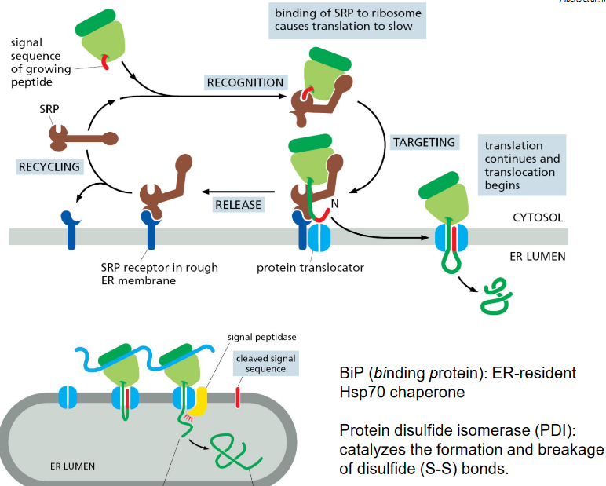
Secretory protein folding is a complex process that occurs within the endoplasmic reticulum (ER) of eukaryotic cells. As proteins destined for secretion are synthesized by ribosomes attached to the rough ER, they undergo a series of folding and modification steps to attain their native conformations. Several key molecular players are involved in this process, including BiP (binding protein), Hsp70 chaperone, and Protein disulfide isomerase (PDI).
BiP, also known as GRP78, is an ER-resident chaperone protein that plays a central role in protein folding and quality control within the ER lumen. It interacts with newly synthesized polypeptide chains to prevent misfolding and aggregation, guiding them along the folding pathway. BiP also assists in the translocation of proteins across the ER membrane and facilitates the assembly of multiprotein complexes.
Hsp70 chaperone, similar to BiP, is involved in the folding of secretory proteins within the ER. It interacts with exposed hydrophobic regions on nascent polypeptide chains, preventing nonproductive interactions and promoting correct folding. Hsp70’s activity is regulated by ATP hydrolysis and is coordinated with other ER-resident chaperones to ensure efficient protein folding.
Protein disulfide isomerase (PDI) is an enzyme that catalyzes the formation and breakage of disulfide (S-S) bonds within secretory proteins. Disulfide bonds play a crucial role in stabilizing protein structures, particularly in secretory and membrane proteins. PDI helps to ensure the proper formation of disulfide bonds, which are essential for protein stability and function. Additionally, PDI can catalyze the rearrangement of incorrect disulfide bonds, ensuring that secretory proteins attain their correct native conformations.
4.2.6 Protein Glycosylation
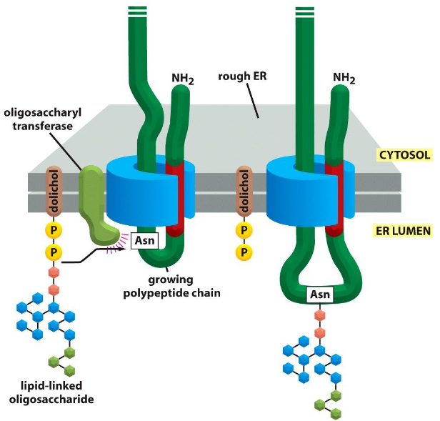
Protein glycosylation is a common post-translational modification that occurs in the endoplasmic reticulum (ER) of eukaryotic cells. This process involves the addition of sugar molecules, such as glucose, mannose, and N-acetylglucosamine, to specific amino acid residues on nascent polypeptide chains as they are being synthesized by ribosomes attached to the ER membrane. The process of protein glycosylation in the ER involves several steps:
Enzymatic addition of a pre-formed oligosaccharide: The initial step of protein glycosylation involves the transfer of a pre-formed oligosaccharide (a short sugar chain) from a lipid carrier molecule to specific asparagine residues on the nascent polypeptide chain. This process is catalyzed by an enzyme complex known as the oligosaccharyltransferase (OST) complex, which is embedded in the ER membrane.
Modification and processing of the glycan chain: After the oligosaccharide is transferred to the protein, it undergoes further modifications and processing steps within the ER lumen. These modifications include trimming of the sugar chain by specific enzymes and the addition of additional sugar residues to form complex glycan structures.
Quality control and protein folding: During or after glycosylation, the newly synthesized protein undergoes quality control checks to ensure proper folding and assembly. Chaperone proteins such as BiP and lectin-like chaperones assist in protein folding and recognize misfolded or improperly glycosylated proteins, targeting them for degradation if necessary.
Glycoprotein trafficking: Once properly folded and glycosylated, the glycoproteins are transported from the ER to the Golgi apparatus for further processing and sorting. In the Golgi, additional modifications may occur, and glycoproteins are sorted for secretion or delivery to specific cellular compartments.
4.2.6.1 Role of Glycosylation During ER Protein Folding
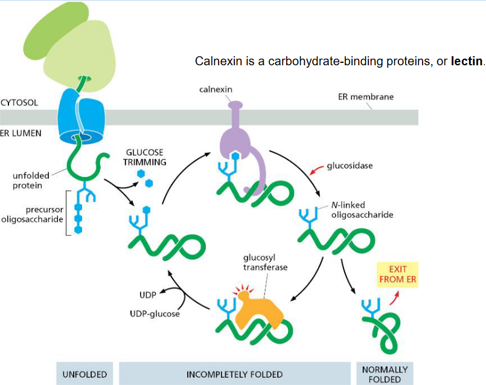
Glycosylation plays a crucial role in protein folding within the endoplasmic reticulum (ER), and calnexin is a key player in this process. Calnexin is a type I integral membrane protein located in the ER membrane and functions as a lectin, specifically a carbohydrate-binding protein.
During protein synthesis, nascent polypeptide chains are co-translationally glycosylated by the addition of a pre-formed oligosaccharide chain. This glycosylation is essential for proper protein folding and quality control. Calnexin recognizes specific monosaccharides, such as glucose and mannose, present on the glycosylated proteins.
Calnexin interacts with newly synthesized glycoproteins that have not yet folded correctly. By binding to the oligosaccharide chains on these proteins, calnexin helps to stabilize them and prevent premature degradation. This interaction provides a quality control mechanism, allowing the glycoproteins to undergo proper folding and assembly.
Furthermore, calnexin collaborates with other chaperones and folding enzymes within the ER, such as BiP (binding immunoglobulin protein) and protein disulfide isomerase (PDI), to facilitate protein folding. Together, these ER-resident proteins ensure that glycosylated proteins attain their native conformations and are properly folded before being transported to their final destinations within the cell.
4.2.7 ERAD Substrate Recognition
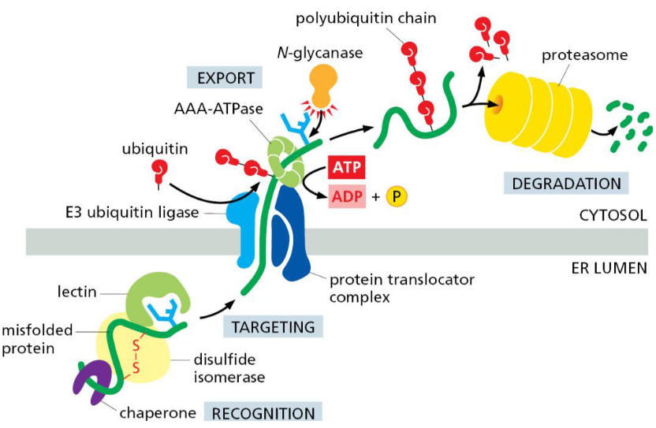
ERAD (Endoplasmic Reticulum-Associated Degradation) is a cellular quality control mechanism responsible for identifying and targeting misfolded or unassembled proteins in the endoplasmic reticulum (ER) for degradation. Substrate recognition is a crucial step in the ERAD process, ensuring that only aberrant proteins are targeted for degradation while properly folded proteins are spared.
The recognition of ERAD substrates involves multiple checkpoints and mechanisms:
Quality control during protein folding: The ER contains a network of chaperones and folding enzymes that assist in the folding of nascent proteins. Properly folded proteins are able to escape recognition by ERAD machinery and proceed to their intended destinations. However, misfolded or unassembled proteins are retained in the ER and subjected to further scrutiny.
Glycan-dependent recognition: Many ERAD substrates bear characteristic glycan modifications that serve as signals for recognition by ERAD machinery. Lectins, such as calnexin and calreticulin, recognize these glycan structures and facilitate the interaction between misfolded proteins and ERAD components.
Ubiquitin-dependent recognition: Misfolded or unassembled proteins are tagged with ubiquitin, a small protein that serves as a signal for degradation by the proteasome. This ubiquitination process is mediated by ER-resident E3 ubiquitin ligases, which specifically recognize and target ERAD substrates for ubiquitination.
ERAD receptors: ERAD substrates are recognized and bound by ER-resident receptors that bridge the interaction between the misfolded protein and the ERAD machinery. These receptors contain specific domains that recognize either the glycan modifications or the ubiquitin chains on ERAD substrates. Examples of ERAD receptors include Derlin proteins and Hrd1 complex components.
ER quality control checkpoints: The ER contains quality control checkpoints that monitor the folding status of proteins. If a protein fails to fold properly or assemble into its functional form, it is recognized by ER quality control sensors, leading to its retrotranslocation from the ER lumen to the cytosol for degradation via ERAD.
4.3 Cellular Responses to Proteotoxic Stresses
4.3.1 Proteostasis Network
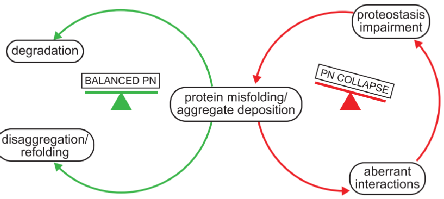
The Proteostasis Network refers to the intricate system within cells that regulates protein homeostasis, ensuring that proteins are properly folded, assembled, trafficked, and degraded. Maintaining proteostasis is essential for cellular health and function, as proteins are involved in virtually every aspect of cellular processes, from structural support to enzymatic reactions and signaling pathways.
The Proteostasis Network consists of various molecular components and pathways that work together to maintain protein quality control:
Chaperones and Folding Factors: Molecular chaperones, such as Hsp70 and Hsp90, assist in protein folding, preventing misfolding and aggregation. They guide nascent polypeptide chains to their proper three-dimensional structures and help proteins navigate through folding intermediates. Folding factors, such as protein disulfide isomerases (PDIs), aid in the formation of disulfide bonds, a crucial step in protein folding.
Protein Degradation Pathways: Misfolded or damaged proteins are targeted for degradation by proteolytic systems such as the ubiquitin-proteasome system (UPS) and autophagy-lysosome pathway. The UPS involves the tagging of proteins with ubiquitin molecules, marking them for degradation by the proteasome. Autophagy sequesters cytoplasmic components, including protein aggregates, into autophagosomes for delivery to lysosomes, where they are degraded.
Quality Control Mechanisms: Cells have quality control mechanisms that monitor protein folding and assembly. If a protein fails to fold properly or assemble correctly, it may be targeted for degradation or undergo retrotranslocation from the ER (endoplasmic reticulum) to the cytosol for ER-associated degradation (ERAD).
Regulatory Pathways: Various signaling pathways and transcriptional regulators modulate the expression of chaperones, folding factors, and components of protein degradation pathways in response to cellular stress or changes in protein homeostasis. These regulatory mechanisms help cells adapt to changing conditions and maintain proteostasis under different physiological states.
Organelle-Specific Proteostasis: Different organelles within the cell, such as the ER, mitochondria, and nucleus, have specialized proteostasis networks tailored to their specific needs. For example, the ER is responsible for folding and processing secretory and membrane proteins, while the mitochondria have their own chaperones and quality control mechanisms to maintain mitochondrial protein homeostasis.
4.3.2 Heat Shock Response
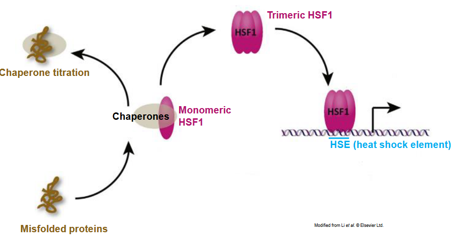
The Heat Shock Response (HSR) is a cellular defense mechanism that is activated in response to elevated temperatures and other stressors, such as oxidative stress, heavy metals, and toxins. The primary function of the HSR is to protect cells from damage caused by these stressors and to restore cellular homeostasis.
When cells are exposed to stress, heat shock transcription factors (HSFs), particularly HSF1, are activated. HSF1 undergoes a conformational change, leading to its trimerization and translocation to the nucleus. Once in the nucleus, HSF1 binds to specific DNA sequences known as heat shock elements (HSEs) located in the promoters of heat shock genes.
Activation of HSF1 leads to the transcriptional upregulation of heat shock proteins (HSPs), a group of molecular chaperones that play essential roles in protein folding, stabilization, and degradation. HSPs help to protect cells from stress-induced damage by assisting in the refolding of denatured proteins, preventing protein aggregation, and facilitating the degradation of irreversibly damaged proteins.
The induction of HSP expression by the HSR is a highly conserved and tightly regulated process across species, from bacteria to humans. HSPs are classified into families based on their molecular weight, including HSP70, HSP90, HSP60, and small HSPs (sHSPs).
In addition to their roles in protein homeostasis, HSPs have been implicated in various cellular processes, including signal transduction, cell cycle regulation, and apoptosis. They also play important roles in development, immunity, and disease.
4.3.2.1 HSF1 in Cancer and Neurodegenerative Diseases?
Tumorigenesis: HSF1 contributes to tumorigenesis by promoting cancer cell survival and proliferation through the regulation of heat shock proteins (HSPs). Elevated levels of HSPs induced by HSF1 activation confer a survival advantage to cancer cells by facilitating protein folding, inhibiting apoptosis, and enhancing cell migration and invasion.
Chemo- and Radiotherapy Resistance: HSF1 activation can lead to resistance to chemotherapy and radiation therapy in cancer cells. The upregulation of HSPs induced by HSF1 activation can protect cancer cells from the cytotoxic effects of these treatments, contributing to treatment failure and disease recurrence.
Metastasis: HSF1 may also play a role in cancer metastasis by promoting epithelial-to-mesenchymal transition (EMT), a process that enhances cancer cell migration and invasion. HSF1-mediated upregulation of HSPs can facilitate EMT-associated changes in gene expression and cellular morphology, promoting metastatic spread.
Protein Misfolding and Aggregation: HSF1 is activated in response to protein misfolding and aggregation, characteristic features of neurodegenerative diseases such as Alzheimer’s, Parkinson’s, and Huntington’s diseases. HSF1 activation leads to the upregulation of HSPs, which can help to refold or degrade misfolded proteins, thereby mitigating their toxic effects.
Neuronal Protection: Activation of HSF1 and induction of HSP expression provide neuroprotection in experimental models of neurodegenerative diseases. By promoting protein homeostasis and reducing cellular stress, HSPs can help to preserve neuronal function and viability in the face of disease-related insults.
Potential Therapeutic Target: Targeting HSF1 or its downstream effectors, such as HSPs, has emerged as a potential therapeutic strategy for neurodegenerative diseases. Modulation of HSF1 activity may help to enhance cellular proteostasis and alleviate disease-associated pathology.
4.3.3 Unfolded Protein Response
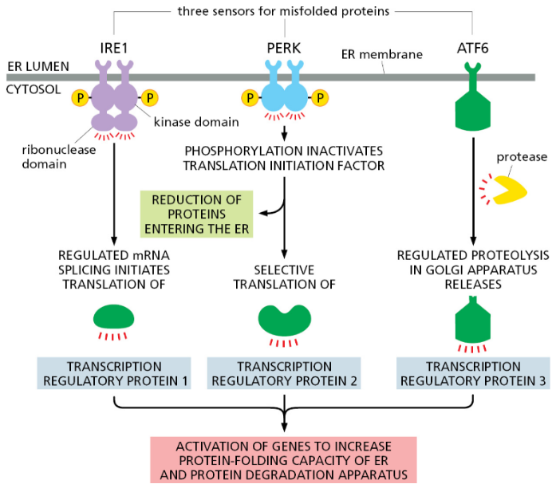
The Unfolded Protein Response (UPR) is a cellular stress response pathway activated in response to the accumulation of unfolded or misfolded proteins within the endoplasmic reticulum (ER), a cellular organelle involved in protein synthesis and folding. The UPR plays a critical role in maintaining protein homeostasis, or proteostasis, by alleviating ER stress and restoring normal cellular function.
When unfolded or misfolded proteins accumulate in the ER, they trigger the activation of three main transmembrane proteins: inositol-requiring enzyme 1 (IRE1), protein kinase RNA-like ER kinase (PERK), and activating transcription factor 6 (ATF6). These sensors initiate signaling cascades that culminate in a coordinated cellular response aimed at reducing ER stress and promoting cell survival.
IRE1 Pathway: Upon activation, IRE1 splices an mRNA encoding the transcription factor X-box binding protein 1 (XBP1), leading to the production of an active transcription factor called spliced XBP1 (XBP1s). XBP1s translocates to the nucleus and activates the transcription of genes involved in ER-associated degradation (ERAD), protein folding, and lipid biosynthesis, promoting ER function and protein folding capacity.
PERK Pathway: PERK activation leads to the phosphorylation of eukaryotic translation initiation factor 2 alpha (eIF2α), resulting in global attenuation of protein synthesis. This temporary reduction in protein synthesis alleviates the burden on the ER, allowing cells to cope with ER stress. Additionally, PERK activation induces the expression of ATF4, a transcription factor that regulates the expression of genes involved in antioxidant defense, amino acid metabolism, and apoptosis.
ATF6 Pathway: ATF6 is transported to the Golgi apparatus upon ER stress, where it undergoes proteolytic cleavage to generate an active transcription factor fragment. This fragment translocates to the nucleus and activates the expression of genes encoding ER chaperones, such as BiP/GRP78, and other proteins involved in protein folding and ERAD.
The combined actions of these UPR pathways help to restore ER homeostasis by increasing the capacity of the ER to fold and degrade proteins, reducing the load of unfolded proteins, and promoting cell survival. However, if ER stress is severe or prolonged, the UPR can also induce apoptosis to eliminate irreversibly damaged cells and maintain overall tissue integrity.
4.3.3.1 Splicing of XBP1 mRNA
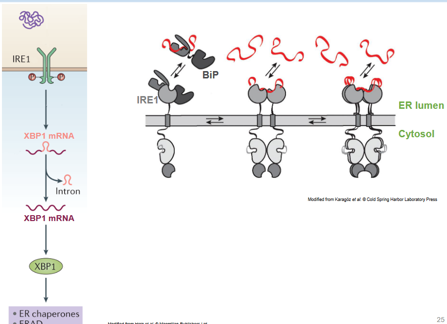
The splicing of X-box binding protein 1 (XBP1) mRNA is a critical step in the activation of the unfolded protein response (UPR), particularly the IRE1 pathway. This process, known as regulated splicing, is tightly regulated and plays a key role in the cellular response to endoplasmic reticulum (ER) stress.
When unfolded or misfolded proteins accumulate in the ER, the ER stress sensor protein inositol-requiring enzyme 1 (IRE1) becomes activated. IRE1 is a transmembrane protein located in the ER membrane. Upon activation, IRE1 undergoes oligomerization and autophosphorylation, leading to its activation as an endoribonuclease.
IRE1 then catalyzes the unconventional splicing of XBP1 mRNA, a process that removes a 26-nucleotide intron from the mRNA. This splicing event generates a shorter mRNA transcript, referred to as spliced XBP1 (XBP1s). XBP1s encodes a transcription factor that is a potent activator of genes involved in ER-associated degradation (ERAD), protein folding, and lipid biosynthesis.
The splicing of XBP1 mRNA is a highly regulated process that is specific to ER stress conditions. Under normal conditions, XBP1 mRNA remains unspliced, and the protein encoded by unspliced XBP1 (XBP1u) does not have transcriptional activity. However, upon ER stress, IRE1-mediated splicing of XBP1 mRNA is rapidly induced, leading to the production of XBP1s and subsequent activation of UPR target genes.
The activation of XBP1s and its downstream target genes is critical for restoring ER homeostasis and promoting cell survival during ER stress. XBP1s regulates the expression of genes involved in protein folding, ERAD, and lipid metabolism, thereby increasing the capacity of the ER to handle the influx of misfolded proteins and alleviate ER stress.
4.3.3.2 PERK Activation
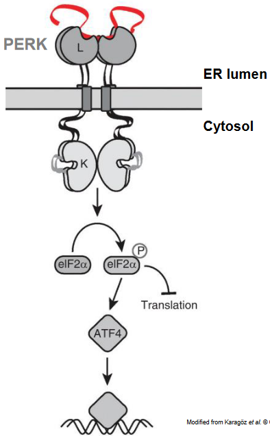
Protein kinase RNA-like ER kinase (PERK) is a key component of the unfolded protein response (UPR) pathway, activated in response to endoplasmic reticulum (ER) stress. One of the main functions of PERK activation is to suppress global translation initiation, a process essential for protein synthesis. This translational attenuation helps to alleviate the burden on the ER by reducing the influx of newly synthesized proteins into the ER lumen, where protein folding occurs.
Upon activation, PERK phosphorylates the alpha subunit of eukaryotic translation initiation factor 2 (eIF2α), a critical component of the translation initiation complex. Phosphorylation of eIF2α inhibits its activity, preventing the formation of the ternary complex required for translation initiation. As a result, global protein synthesis is attenuated, reducing the overall protein load on the ER and allowing cells to cope with ER stress.
While global translation is suppressed, the translation of specific mRNAs is selectively enhanced or maintained during PERK activation. For example, the mRNA encoding activating transcription factor 4 (ATF4) contains specific regulatory elements in its 5’ untranslated region (UTR), known as upstream open reading frames (uORFs), which allow for preferential translation even under conditions of eIF2α phosphorylation. ATF4 is a transcription factor that regulates the expression of genes involved in various cellular processes, including antioxidant defense, amino acid metabolism, and apoptosis.